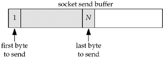
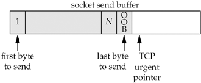

| [ Team LiB ] |
|
24.2 TCP Out-of-Band DataTCP does not have true out-of-band data. Instead, TCP provides an urgent mode. Assume a process has written N bytes of data to a TCP socket and that data is queued by TCP in the socket send buffer, waiting to be sent to the peer. We show this in Figure 24.1 and have labeled the data bytes 1 through N. Figure 24.1. Socket send buffer containing data to send. The process now writes a single byte of out-of-band data, containing the ASCII character a, using the send function and the MSG_OOB flag. send(fd, "a", 1, MSG_OOB); TCP places the data in the next available position in the socket send buffer and sets its urgent pointer for this connection to be the next available location. We show this in Figure 24.2 and have labeled the out-of-band byte "OOB." Figure 24.2. Socket send buffer after one byte of out-of-band data is written by application.
Given the state of the TCP socket send buffer shown in Figure 24.2, the next segment sent by TCP will have its URG flag set in the TCP header and the urgent offset field in the TCP header will point to the byte following the out-of-band byte. But this segment may or may not contain the byte that we have labeled as OOB. Whether the OOB byte is sent depends on the number of bytes ahead of it in the socket send buffer, the segment size that TCP is sending to the peer, and the current window advertised by the peer.
This is an important characteristic of TCP's urgent mode: The TCP header indicates that the sender has entered urgent mode (i.e., the URG flag is set along with the urgent offset), but the actual byte of data referred to by the urgent pointer need not be sent. Indeed, if the sending TCP is stopped by flow control (the receiver's socket receive buffer is full, so its TCP has advertised a window of 0 to the sending TCP), the urgent notification is sent without any data (pp. 1016–1017 of TCPv2), as we will show in Figures 24.10 and 24.11. This is one reason why applications use TCP's urgent mode (i.e., out-of-band data): The urgent notification is always sent to the peer TCP, even if the flow of data is stopped by TCP's flow control. What happens if we send multiple bytes of out-of-band data, as in send(fd, "abc", 3, MSG_OOB); In this example, TCP's urgent pointer points one beyond the final byte; that is, the final byte (the c) is considered the out-of-band byte. Now that we have covered the sending of out-of-band data, let's look at it from the receiver's side:
Some of the following errors are possible:
Simple Example Using SIGURGWe now show a trivial example of sending and receiving out-of-band data. Figure 24.3 shows the sending program. Nine bytes are sent, with a one-second sleep between each output operation. The purpose of the pause is to let each write or send be transmitted as a single TCP segment and received as such by the other end. We'll talk later about some of the timing considerations with out-of-band data. When we run this program, we see the expected output.
macosx % tcpsend01 freebsd4 9999
wrote 3 bytes of normal data
wrote 1 byte of OOB data
wrote 2 bytes of normal data
wrote 1 byte of OOB data
wrote 2 bytes of normal data
Figure 24.3 Simple out-of-band sending program.oob/tcpsend01.c
1 #include "unp.h"
2 int
3 main(int argc, char **argv)
4 {
5 int sockfd;
6 if (argc != 3)
7 err_quit("usage: tcpsend01 <host> <port#>");
8 sockfd = Tcp_connect(argv[1], argv[2]);
9 Write(sockfd, "123", 3);
10 printf("wrote 3 bytes of normal data\n");
11 sleep(1);
12 Send(sockfd, "4", 1, MSG_OOB);
13 printf("wrote 1 byte of OOB data\n");
14 sleep(1);
15 Write(sockfd, "56", 2);
16 printf("wrote 2 bytes of normal data\n");
17 sleep(1);
18 Send(sockfd, "7", 1, MSG_OOB);
19 printf("wrote 1 byte of OOB data\n");
20 sleep(1);
21 Write(sockfd, "89", 2);
22 printf("wrote 2 bytes of normal data\n");
23 sleep(1);
24 exit(0);
25 }
Figure 24.4 is the receiving program. Establish signal handler and socket owner16–17 The signal handler for SIGURG is established, and fcntl sets the owner of the connected socket.
Figure 24.4 Simple out-of-band receiving program.oob/tcprecv01.c
1 #include "unp.h"
2 int listenfd, connfd;
3 void sig_urg(int);
4 int
5 main(int argc, char **argv)
6 {
7 int n;
8 char buff[100];
9 if (argc == 2)
10 listenfd = Tcp_listen(NULL, argv[1], NULL);
11 else if (argc == 3)
12 listenfd = Tcp_listen(argv[1], argv[2], NULL);
13 else
14 err_quit("usage: tcprecv01 [ <host> ] <port#>");
15 connfd = Accept(listenfd, NULL, NULL);
16 Signal(SIGURG, sig_urg);
17 Fcntl(connfd, F_SETOWN, getpid());
18 for ( ; ; ) {
19 if ( (n = Read(connfd, buff, sizeof(buff) - 1)) == 0) {
20 printf("received EOF\n");
21 exit(0);
22 }
23 buff[n] = 0; /* null terminate */
24 printf("read %d bytes: %s\n", n, buff);
25 }
26 }
27 void
28 sig_urg(int signo)
29 {
30 int n;
31 char buff[100];
32 printf("SIGURG received\n");
33 n = Recv(connfd, buff, sizeof(buff) - 1, MSG_OOB);
34 buff[n] = 0; /* null terminate */
35 printf("read %d OOB byte: %s\n", n, buff);
36 }
18–25 The process reads from the socket, printing each string that is returned by read. When the sender terminates the connection, the receiver then terminates. SIGURG handler27–36 Our signal handler calls printf, reads the out-of-band byte by specifying the MSG_OOB flag, and then prints the returned data. Notice that we ask for up to 100 bytes in the call to recv, but as we will see shortly, only 1 byte is ever returned as out-of-band data.
Here is the output when we run the receiving program, and then run the sending program from Figure 24.3:
freebsd4 % tcprecv01 9999
read 3 bytes: 123
SIGURG received
read 1 OOB byte: 4
read 2 bytes: 56
SIGURG received
read 1 OOB byte: 7
read 2 bytes: 89
received EOF
The results are as we expect. Each sending of out-of-band data by the sender generates SIGURG for the receiver, which then reads the single out-of-band byte. Simple Example Using selectWe now redo our out-of-band receiver to use select instead of the SIGURG signal. Figure 24.5 is the receiving program. 15–20 The process calls select while waiting for either normal data (the read set, rset) or out-of-band data (the exception set, xset). In each case, the received data is printed. When we run this program and then run the same sending program as earlier (Figure 24.3), we encounter the following error:
freebsd4 % tcprecv02 9999
read 3 bytes: 123
read 1 OOB byte: 4
recv error: Invalid argument
The problem is that select indicates an exception condition until the process reads beyond the out-of-band data (pp. 530–531 of TCPv2). We cannot read the out-of-band data more than once because after we read it the first time, the kernel clears the one-byte out-of-band buffer. When we call recv specifying the MSG_OOB flag the second time, it returns EINVAL. Figure 24.5 Receiving program that (incorrectly) uses select to be notified of out-of-band data.oob/tcprecv02.c
1 #include "unp.h"
2 int
3 main(int argc, char **argv)
4 {
5 int listenfd, connfd, n;
6 char buff[100];
7 fd_set rset, xset;
8 if (argc == 2)
9 listenfd = Tcp_listen(NULL, argv[1], NULL);
10 else if (argc == 3)
11 listenfd = Tcp_listen(argv[1], argv[2], NULL);
12 else
13 err_quit("usage: tcprecv02 [ <host> ] <port#>");
14 connfd = Accept(listenfd, NULL, NULL);
15 FD_ZERO(&rset);
16 FD_ZERO(&xset);
17 for ( ; ; ) {
18 FD_SET(connfd, &rset);
19 FD_SET(connfd, &xset);
20 Select(connfd + 1, &rset, NULL, &xset, NULL);
21 if (FD_ISSET(connfd, &xset)) {
22 n = Recv(connfd, buff, sizeof(buff) - 1, MSG_OOB);
23 buff[n] = 0; /* null terminate */
24 printf("read %d OOB byte: %s\n", n, buff);
25 }
26 if (FD_ISSET(connfd, &rset)) {
27 if ( (n = Read(connfd, buff, sizeof(buff) - 1)) == 0) {
28 printf("received EOF\n");
29 exit(0);
30 }
31 buff[n] = 0; /* null terminate */
32 printf("read %d bytes: %s\n", n, buff);
33 }
34 }
35 }
The solution is to select for an exception condition only after reading normal data. Figure 24.6 is a modification of Figure 24.5 that handles this scenario correctly. 5 We declare a new variable named justreadoob, which indicates whether we just read out-of-band data or not. This flag determines whether or not to select for an exception condition. 26–27 When we set the justreadoob flag, we must also clear the bit for this descriptor in the exception set. The program now works as expected. Figure 24.6 Modification of Figure 24.5 to select for an exception condition correctly.oob/tcprecv03.c
1 #include "unp.h"
2 int
3 main(int argc, char **argv)
4 {
5 int listenfd, connfd, n, justreadoob = 0;
6 char buff[100];
7 fd_set rset, xset;
8 if (argc == 2)
9 listenfd = Tcp_listen(NULL, argv[1], NULL);
10 else if (argc == 3)
11 listenfd = Tcp_listen(argv[1], argv[2], NULL);
12 else
13 err_quit("usage: tcprecv03 [ <host> ] <port#>");
14 connfd = Accept(listenfd, NULL, NULL);
15 FD_ZERO(&rset);
16 FD_ZERO(&xset);
17 for ( ; ; ) {
18 FD_SET(connfd, &rset);
19 if (justreadoob == 0)
20 FD_SET(connfd, &xset);
21 Select(connfd + 1, &rset, NULL, &xset, NULL);
22 if (FD_ISSET(connfd, &xset)) {
23 n = Recv(connfd, buff, sizeof(buff) - 1, MSG_OOB);
24 buff[n] = 0; /* null terminate */
25 printf("read %d OOB byte: %s\n", n, buff);
26 justreadoob = 1;
27 FD_CLR(connfd, &xset);
28 }
29 if (FD_ISSET(connfd, &rset)) {
30 if ( (n = Read(connfd, buff, sizeof(buff) - 1) ) == 0) {
31 printf("received EOF\n");
32 exit(0);
33 }
34 buff[n] = 0; /* null terminate */
35 printf("read %d bytes: %s\n", n, buff);
36 justreadoob = 0;
37 }
38 }
39 }
|
| [ Team LiB ] |
|